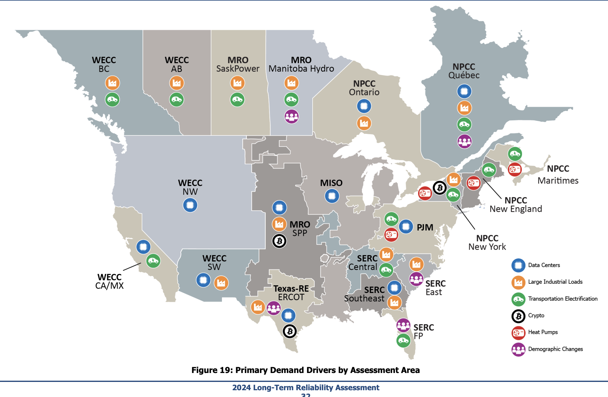

The Future of U.S. Electricity Demand Through 2030
Over the past few months, I’ve been compiling a comprehensive dataset on electricity load projections across the United States as part of a larger research project on national electricity demand modeling that we hope to release later this year or early next year. While working on it, I wanted to benchmark our internal projections with public data across the U.S.—which led to this quick side project using a mix of domain knowledge and data extraction.
Data Collection
My initial approach was to build this analysis from the ground up using utility-level Integrated Resource Plans (IRPs). However, I quickly discovered that comprehensive utility IRP data is surprisingly sparse and fragmented across the country. Given these limitations, I pivoted to aggregating projections at the regional ISO/RTO level, which provides both better data coverage and more meaningful insights for understanding grid-scale dynamics. If you’re interested in IRP tracking, here are two great resources:
- Rocky Mountain Institute’s IRP Tracker – tracking emissions commitments and decarbonization progress
- Wood Mackenzie analysis of utility large load pipelines
A 25% Increase in National Electricity Demand by 2030
The data reveals that US annual electricity load is projected to grow from approximately 4,365 TWh in 2024-2025 to 5,436 TWh by 2030—a 25% increase in just five years. From about 2001 to 2021, the US saw almost flat electricity demand, with average annual growth rates only about 0.1–0.5% per year. The current projected increase to 2030 represents higher growth rates of 2.5–3% per year.
Here are the key regional highlights:
Annual Load Projections by Region (TWh only)
| Region | Current (2024-2025) TWh | 2030 Projection TWh | Percentage Increase 2024/2025 to 2030 | Share of total load in 2024/2025 | Share of total load in 2030 | Scenario/Notes | Reference |
|---|---|---|---|---|---|---|---|
| SERC | 1,350 | 1,610 | 19% | 31% | 30% | using 2% ACGR and/or 320 GW peak load (2030) with 57.5% LF | SERC Long-Term Reliability Assessments |
| WECC (non-CAISO) | 942 | 1,070 | 14% | 22% | 20% | 20.4% growth to 2034 | WECC Annual Report, NERC assessments |
| PJM | 800 | 920 | 15% | 18% | 17% | 40% growth by 2039 | PJM Inside Lines, 2025 Load Forecast Tables |
| ERCOT | 496 | 811 | 64% | 11% | 15% | 811 TWh calculated using 62.6% LF and peak load of 148 GW (2030) | ERCOT Long-Term Load Forecast Update, 2025 methodology |
| SPP | 290 | 465 | 60% | 7% | 9% | Moderate Electrification scenario | SPP 2024 LOLE Study Report, Future Load Scenarios report |
| CAISO | 218 | 272 | 25% | 5% | 5% | CEC baseline forecast | CAISO 2025 Summer Load & Resources Assessment, CEC 2024 IEPR |
| NYISO | 152 | 163 | 7% | 3% | 3% | Baseline scenario from Gold Book | NYISO 2025 Gold Book, Power Trends 2025 |
| ISO-NE | 117 | 125 | 7% | 3% | 2% | 50/50 net forecast | ISO-NE Capacity, Energy, Loads, and Transmission (CELT) 2025 |
| Total | 4,365 | 5,436 | 25% | ||||
Percentage Increase Color Legend
High Growth Regions
- ERCOT (Texas): A striking 64% increase, growing from 496 TWh to 811 TWh by 2030
- SPP (Central Plains): 60% increase, from 290 TWh to 465 TWh
- CAISO (California): 25% growth, reaching 272 TWh
Moderate Growth Regions:
- SERC: 19% increase to 1,610 TWh
- PJM: 15% growth to 920 TWh
- WECC (non-CAISO): 14% increase to 1,070 TWh
Slower Growth:
- NYISO and ISO-NE: Both projecting modest 7% growth
Understanding What’s Driving Growth
The NERC assessment map provides crucial context for understanding these regional variations.

- Data centers are a major factor across most regions, particularly in Texas, the Southeast, and PJM territory
- Industrial electrification and large industrial loads are accelerating in manufacturing-heavy regions
- Transportation electrification is contributing to baseline growth across all areas
- Heat pumps and building electrification are reshaping winter peak dynamics in the Northeast and California
Looking Ahead
Regardless of the precise accuracy of these projections, they provide valuable insight into the scale of transformation our electric grid is undergoing. We’re not talking about incremental adjustments; we’re looking at a fundamental reshaping of electricity demand patterns that will require unprecedented levels of investment in generation, transmission, and grid flexibility.
For those working in energy markets and grid planning, understanding these regional dynamics will be crucial for navigating the next decade of change.
Important Caveats and Context
A few critical notes:
Scenario heterogeneity: The projections across regions are based on different scenarios and methodologies. ERCOT’s figure assumes a 62.6% load factor with a peak load of 148 GW, while SPP uses a “Moderate Electrification” scenario. This means we’re comparing somewhat different assumptions across regions—potentially apples to oranges in some cases.
Calculation uncertainties: Some values are derived from peak load projections and assumed load factors rather than direct annual energy forecasts, introducing additional uncertainty.
The relative stability of market share: Despite ERCOT and SPP’s dramatic percentage increases, their share of total US load grows more moderately—from 11% to 15% for ERCOT and from 7% to 9% for SPP. This indicates that the regional distribution of load is largely maintaining historical patterns.